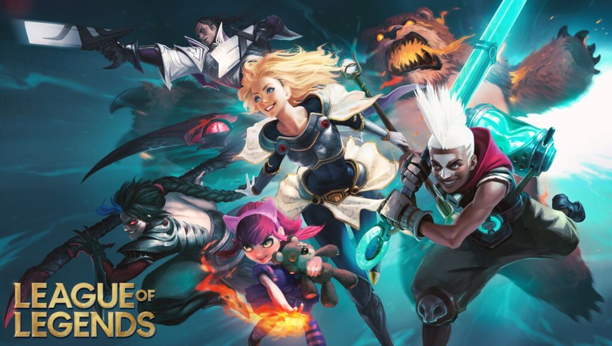

League of Legends
League of Legends é um jogo de estratégia em que duas equipes de cinco poderosos Campeões se enfrentam para destruir a base uma da outra. Escolha entre mais de 140 Campeões para realizar jogadas épicas, assegurar abates e destruir torres conforme você luta até a vitória.

Sua equipe precisa avançar por pelo menos uma rota para chegar ao Nexus inimigo, contendo em seu caminho estruturas defensivas chamadas de torres e inibidores. Cada rota tem três torres e um inibidor, e cada Nexus é protegido por duas torres.
Clique aqui para ir para o Site do LOL

Desenvolvido por: Bill Gates